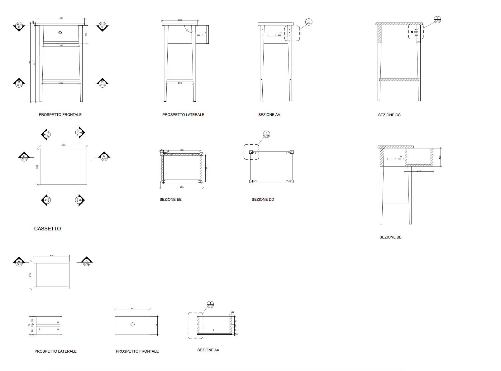
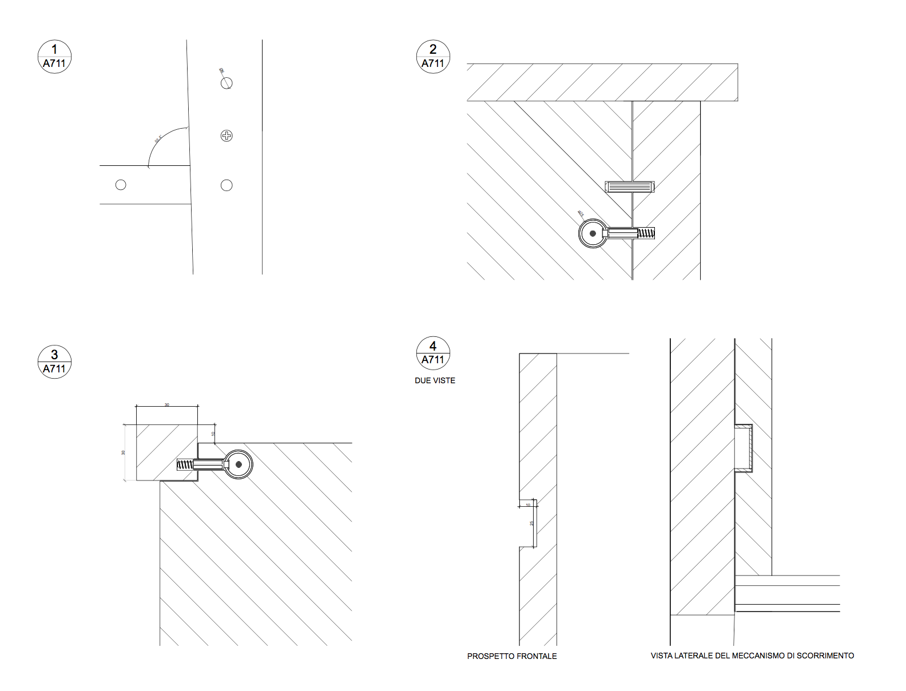
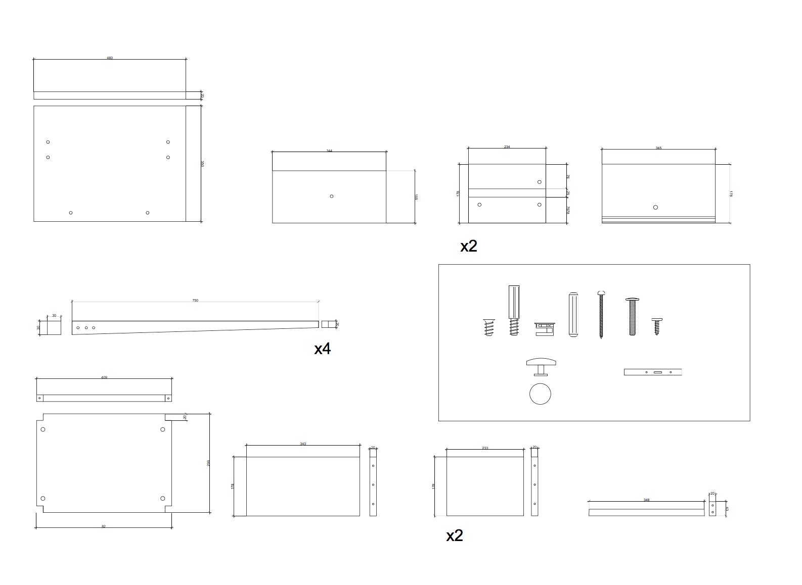

MO-D_2


Struttura letto alta:
Parti principali/ Ripiano: Pino massiccio, Mordente, Vernice acrilica, trasparente
Lati del cassetto/ Parte posteriore: Pino massiccio
Base del cassetto: Fibra di legno, Lamina
PROSPETTI E SEZIONI
DETTAGLI
ABACO ELEMENTI
 Sito sviluppato per il corso di Strumenti e Metodi del progetto